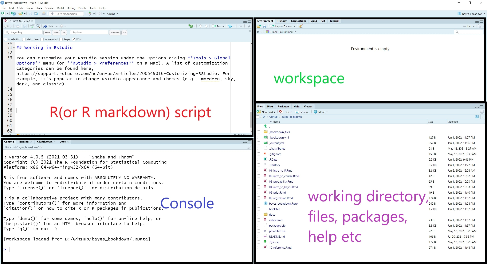

# install.packages(tidyverse, dependencies = T)
library(tidyverse) # load package library1. Getting started with R
Learning Objectives
- learn about R and RStudio work environment
- understand objects in R
- use R as a calculator
- import and export data files
- data wrangling
- learn about simple iterative programming in R
1.1 R and RStudio
R is a language and environment for statistical computing and graphics (https://cran.r-project.org/manuals.html).
Many users of R like to use RStudio as the preferred interface for programming in R.
RStudio is an Integrated Development Environment (IDE) for R.
- easy to navigate
- lots of point and click features and customizations
- Rstudio is not just for R
RStudio layout
When you open RStudio, your interface is made up of four panes as shown below. These can be organised via menu options View > Panes >

R Packages
Packages are the fundamental units of reproducible R code.
They include reusable R functions, the documentation that describes how to use them, and sample data.
We install the package using
install.packages()function or we can use the Package tab in Rstudio.Once we have the package installed, we must load the functions from this library so we can use them within R.
R script
We can run code in the console at the prompt where R will evaluate it and print the results.
best practice write code in a new script file so it can be saved, edited, and reproduced.
To open a new script, we select File > New File > R Script.
To “run code” that was written in the script file, you can highlight the code lines you wish be evaluated and
- press CTRL-Enter (windows)
- Cmd+Return (Mac).
Additionally, You can comment or uncomment script lines by pressing
- Ctrl+Shift+C (windows)
- Cmd+Shift+C (Mac).
The comment operator in R is
#.You can find more RStudio default keyboard shortcuts here.
Customization
You can customize your RStudio session under the Options dialog Tools > Global Options menu (or RStudio > Preferences on a Mac).
A list of customization categories can be found here.
Working directory
The working directory is the default location where R will look for files you want to load and where it will put any files you save.
You can use function
getwd()to display your current working directoryand use function
setwd()to set your working directory to a new folder on your computer.
getwd() #show my current working directory;[1] "D:/GitHub/Rworkshop"Getting help with R
The help section of R is extremely useful if you need more information about the packages and functions that you are currently loaded.
You can initiate R help using the help function
help()or?, the help operator.
help(ggplot)1.2 Basic R
- In this subsection, I will briefly outline some common R functions and commands for arithmetic, creating and working with objects such as vector and matrix
R is case sensitive.
Commands are separated by a newline in the console.
The # character can be used to make comments. R does not execute the rest of the line after the # symbol - it ignores it.
Previous commands can be accessed via the up and down arrow keys on the keyboard.
When naming in R, avoid using spaces and special characters (i.e., !@#$%^&*()_+=;:’“<>?/) and avoid leading names with numbers.
Arithmetic
2*3
2^3
2 + (2 + 3) * 2 - 5
log(3)
exp(3)
log(exp(1)) #playing with Euler's number;
sqrt(x)- Some of the other available useful functions are: abs(), sqrt(), ceiling(), floor(), trunc(), round() .
Creating Scalars
# Creating a scalar called "a" and assigning a value of 2
a=2
# Creating a scalar called "b" and assigning a value of 3
b=3
# Adding "a" and "b" and saving under "d"
d=a+b
# Printing the vaue of "d"
d[1] 5# Updating the value of a scalar
# Adds 5 to the old value of "a" and saves it again under the name "a".
# Old value=2, New value = 7
a=a+5
a[1] 7# Computation using scalar objects
(a-b)^3 + log(d)[1] 65.60944Logic check
x=4 # assigning 4 to x
x<5 # checks if x is less than 5 or not[1] TRUEx>5 # checks if x is greater than 5 or not[1] FALSEx<=5 # less or equal[1] TRUEx>=5 # greater or equal[1] FALSEx==4 #( == stands for euqal)[1] TRUEx!=4 #( != stands for not equal)[1] FALSEif and else-if
If statements in R has got this following structure
# if(condition to check){things to do if the condition is true}A simple example:
x=3
if(x==3){print("x is 3")}[1] "x is 3"x=4
if(x==3){print("x is 3")} # this will print nothingelse-if statements in R has got this following structure
# if(condition A){
#
# things to do if condition A is true
#
# }elseif(condition B){
#
# things to do if condition A is false and condition B is true
#
# }else{
#
# things to do if both conditions are false
#
# }x # current value of x[1] 4if(x==3){
print("x is 3")
}else if(x>3){
print("x is greater than 3")
}else{
print("x is less than 3")
}[1] "x is greater than 3"Vectors
Operator <- is called the assignment operation, we can create a vector (numeric, characteristic, or mixture) using the assignment operation and the c() function.
# a vector of a single element;
x <- 3
x
# a character vector
x <- c("red", "green", "yellow")
x
length(x)
nchar(x) #number of characters for each element;
# encode a vector as a factor (or category);
y <- factor(c("red", "green", "yellow", "red", "red", "green"))
y
class(y)
as.numeric(y) # we can return factors with numeric labels;
# we can also label numeric vector with factor levels;
z <- factor(c(1,2,3,1,1,2), levels = c(1,2,3), labels = c("red", "green","yellow"))
z
class(z)
mode(z)
#we can use this to create dummy variables for regression;
contrasts(z)
# using the repeat command
# the following line repeats 3, 10 times
x=rep(3,5)
x
# a numeric vector;
x <- c(10.4, 5.6, 3.1, 6.4, 21.7, 53.5, 3.6, 2.6, 6.1, 1.7)
x
length(x) #return number of elements;
# a numeric vector composed of all integers between 1 and 10;
y <- 1:10
y
# a numeric vector composed of all even number integers between 0 and 10;
z <- seq(0,10, by=2)
z
# simple vector based calculations;
x + y
x*y
x/y
# matrix in R;
matrix(1:16, nrow=4)
matrix(1:16, nrow=4, byrow=TRUE)
matrix(1:16, nrow=4)
diag(matrix(1:16, nrow=4))
diag(c(1,-3,7))
diag(3)
# matrix calculation;
X <- matrix(1:16, nrow=4, byrow=T)
X
t(X) #transpose;
Y <- matrix(seq(1,32, by=2), nrow=4, byrow=T)
Y
Y + X
Y - X
3 * X
X * Y
X %*% Y #inner product;
## Logical check for a vector
#Just like a scalar, we can evaluate logical conditions using a vector as well. This is an _element-wise_ operation. Which means R will check every element of that vector to see if the condition is met or not. The output will be a TRUE/FALSE vector.
#Let's star with a new vector which has 5 elements
x= c(3,6,2,8,10)
x
# Checking every element to see if it's greater than 5
# The output will be a TRUE/FALSE vector
# TRUE if the element is >5, FALSE otherwise.
x>5
#Checking every element if it's equal to 2
x==2
## Counting number of elements that satisfy a certain condition
#Logical checks produces TRUE/FALSE vectors. In the background which is 1 and 0. If we use sum( ) function on this TRUE/FALSE vector we get the total number elements which resulted in a "TRUE" .
# using the same x vector
x= c(3,6,2,8,10)
sum(x>5)
#count of elements in x that are less or equal to 8
sum(x<=8)
## Subsetting a vector
# To pick elements from a vector we use the open bracket [ ] after the name of the vector and write which elements we want out of it.
#Starting with same x vector
x= c(3,6,2,8,10)
x[1] # gives us the first element of x
x[ c(1,3,4) ] # gives us the 1st, 3rd and 4th element
x[-1]
x[-1:-2]
x[-c(1,2)]Calculating summary statistics
r=c(1:100)
mean(r) #calculate the mean of a vector[1] 50.5var(r) #variance of a vector[1] 841.6667sd(r) #standard deviation of a vector[1] 29.01149min(r) #minimum of a vector[1] 1max(r) #maximum of a vector[1] 100median(r)#median[1] 50.5range(r) #range[1] 1 100